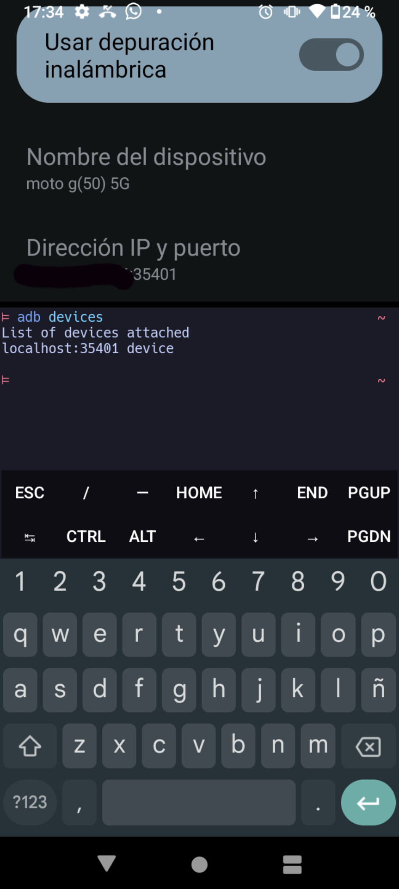

COMO RESOLVER EL PROBLEMA DE CONEXION DE LAS MAQUINAS VIRTUALES
Lo primero para poder resolver este problema nececitamos instalar el paquete
pkg install android-tools
ya instalado lo siguiente que haremos es activar las opciones de desarrollador en nuestro dispocitivo y activar la depuracion inalambrica
ya activada la depuracion inalambrica diviremos pantalla arriba con el codigo de vinculacion y abajo la consolade termux
ahora pincharemos en donde dice vincular dispocitivo con codigo de sincronizacion
ya que nos salga la leyenda con el codigo de vinculacion ahora en termux ejecutaremos adb pair localhost:
aqui ponemos el puerto y el codigo de vinculacion
 ya ejecutado el anterior comando con los datos requeridos ahora ejecutaremos
ya ejecutado el anterior comando con los datos requeridos ahora ejecutaremos
adb connect localhost:
aqui ponemos el puerto que parece abajo de nombre de el dispocitivo
con ese comando ya se nos conectaria a adb
 en donde dice el puerto para que se conecte adb hay colocaremos el puerto que aparece en la siguiente imagen
ya conectado ejecutaremos
en donde dice el puerto para que se conecte adb hay colocaremos el puerto que aparece en la siguiente imagen
ya conectado ejecutaremos
adb devices
para comprobar si se conecto correctamente

ya comprovada la coneccion ahora ejecutaremos los siguientes comandos
adb shell "/system/bin/device_config set_sync_disabled_for_tests persistent"
adb shell "/system/bin/device_config put activity_manager max_phantom_processes 2147483647"
adb shell settings put global settings_enable_monitor_phantom_procs false
ya ejecutados los anteriores comandos en termux estaria resuelto el problema de coneccion de las maquinas virtuales,ya puedes desactivar la depuracion inalambrica
si no entediste algunas de las indicaciones puedes apoyarte de este video
click aqui para ver el video